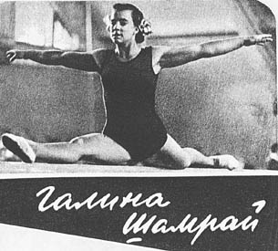

Galina Shamrai (USSR)
1954 World AA Champion

Medal Total
Olympic Games: 1
Gold
World Championships: 2 Gold, 1 Silver
Galina was born on October 5, 1931 in
Tashkent, She began gymnastics in school, during World War II, and competed for Tashkent's Iskra team from 1948 to 1952. In 1949, she became the Uzbek AA champion, got her Master of Sport distinction, and joined the USSR national team. She moved to Moscow in early 1952 to take advantage of better coaching and training facilities. She was a member of the gold medal winning 1952 Olympic and the 1954 World Championships teams, but sustained an injury prior to the 1956 Olympics.
She graduated from the Moscow Pedagogical Institute in 1956 and continued to compete until 1960. She then became a gymnastics coach, and worked as a senior coach of the Bulgarian national team from 1969 to 1971. Upon returning to the USSR, she worked as a senior gymnastics coach at DSO Spartak. Shamrai received her brevet judging rating in 1975, and was a deputy chief judge at the 1980 Moscow Olympics.
Competition Results
1950
USSR Championships: 8th AA
1951
USSR Team Championships: 9th AA
World College Summer Games: 1st Team, 1st R
1952
Olympic Games: 1st Team, 8th AA
USSR Championships: 5th AA
1953
USSR Championships: 4th AA
USSR Team Championships: 8th AA
1954
USSR Championships: 3rd AA
World Championships: 1st Team, 1st AA, 2nd UB, 5th V,
5th B, 5th FX
This page was created on September
06, 2004 and was last updated on October 31, 2024.
© Gymn Forum